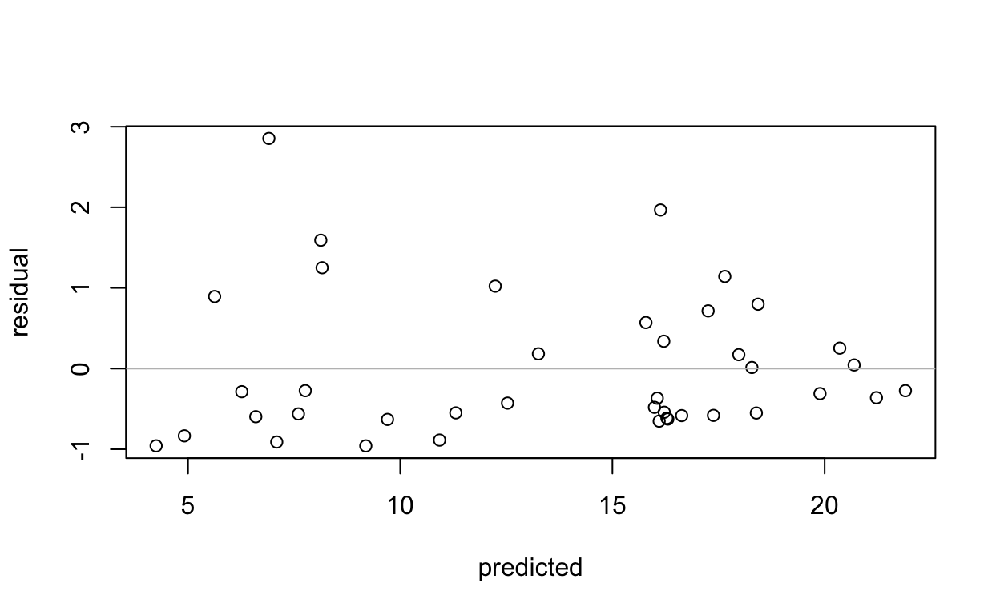
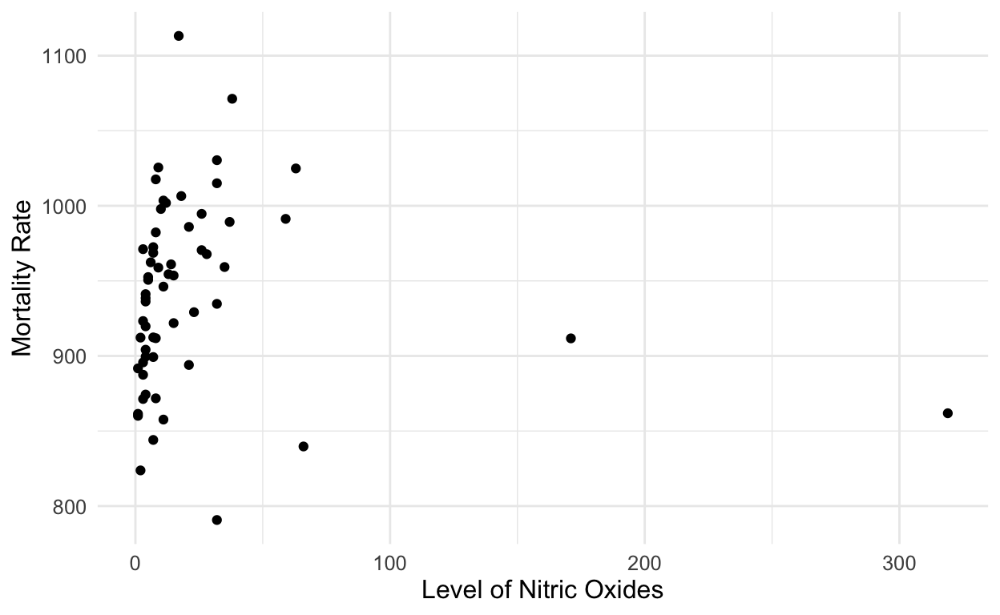
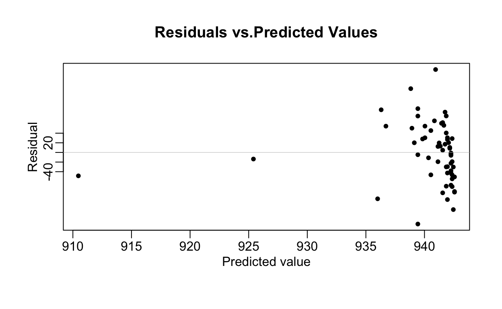

“Gelman Chapter 11, 12”
For the model in Section 7.1 predicting presidential vote share from the economy, discuss each of the assumptions in the numbered list in Section 11.1. For each assumption, state where it is made (implicitly or explicitly) in the model, whether it seems reasonable, and how you might address violations of the assumptions
1.Validity: The Bread and Peace Model by Douglas Hibbs forecasts elections based on the economic growth. In this model the dependent variable is the election outcome which was measured as the incumbent party’s vote share and the independent variable is economic growth which is measured by average personal income growth. The measurement that this model includes is relevant to the the constructs they are trying to portray and not something vague and unrelated to broadly election outcome or the economic growth. As Gelman mentions in the book, using vote share is more informative than predicting a winner as this keeps things more generic. In this sense, I think the model is valid. One thing that I noticed is that the authors describe a “simple model” such as this to work very well in some cases however I wonder if just one predictor is enough to understand a large and common political phenomena like elections. What about the demographics of the voters whose average personal income growth was taken into account? What are their economic backgrounds? These are just some things I would think about while taking the sample for analysis in our data. Additionally, can this model be used to predict elections in other parts of the world? I think of this especially in the developing world, if we were to apply it in countries in Asia or Africa, will average personal income growth be truly reflective of their social fabric and the informal economies some of these countries have? While this model is valid on this data of US elections,I’d be curious to see how this can be used or tweaked around with other data.
2.Representativeness: As Gelman writes in RaOS, the model is fit to data and is used to make inferences about a larger population– and also that the sample itself is representative of a larger population. In this case, the researchers aren’t really using a sample or a subset of a population so we might be able to eliminate that aspect of representativeness, but also the authors have not used years before 1952 when the US was going through drastic socio-economic and political changes due to the recession and WWII. Is it truly representative of all elections then? As Gelman writes in Ch 11, when there is some generalization involved, the issues of statistical significance arise and we need to ensure that the samples are representative of our corresponding populations in order to best make inferences with our generated fits.
3.Additivity and Linearity: In this case, the model is linear as we are making an assumption that a unit increase in one things leads to increase in another, on average. In this model, there is only one predictor, and there are no transformations and interactions therefore it is safe to assume that additivity is not violated.
4. Independence of Errors: The simple regression model assumes that errors from the prediction line are independent. Since the bread and peace model does not include elements of time-series, spatial analysis or multi-level settings, it is safe to assume that the errors from the prediction line are independent
5. Equal Variance of Errors: This is a hetroscedastic model as there are non-equal variances in errors.To ensure that these constructs work in different settings, we would have to apply methods of scaling, transformation of perhaps even weights so that we can create a better fit for data that can be passed on to make inferences.
Residuals and predictions: The folder Pyth contains outcome y and predictors x1, x2 for 40 data points, with a further 20 points with the predictors but no observed outcome. Save the file to your working directory, then read it into R using read.table().
Use R to fit a linear regression model predicting y from x1, x2, using the first 40 data points in the file. Summarize the inferences and check the fit of your model.
Display the estimated model graphically as in Figure 10.2.
Make a residual plot for this model. Do the assumptions appear to be met?
Make predictions for the remaining 20 data points in the file. How confident do you feel about these predictions? After doing this exercise, take a look at Gelman and Nolan (2017, section 10.4) to see where these data came from**
Call:
lm(formula = V1 ~ V2, data = df)
Residuals:
Min 1Q Median 3Q Max
-7.7409 -4.5056 0.7114 4.3739 7.7547
Coefficients:
Estimate Std. Error t value Pr(>|t|)
(Intercept) 10.0633 1.5526 6.481 1.25e-07 ***
V2 0.6559 0.2499 2.625 0.0124 *
---
Signif. codes: 0 '***' 0.001 '**' 0.01 '*' 0.05 '.' 0.1 ' ' 1
Residual standard error: 4.921 on 38 degrees of freedom
Multiple R-squared: 0.1535, Adjusted R-squared: 0.1312
F-statistic: 6.89 on 1 and 38 DF, p-value: 0.01242
Call:
lm(formula = V1 ~ V3, data = df)
Residuals:
Min 1Q Median 3Q Max
-3.1751 -1.2352 -0.1867 1.0899 5.3755
Coefficients:
Estimate Std. Error t value Pr(>|t|)
(Intercept) 3.78532 0.66037 5.732 1.33e-06 ***
V3 0.83223 0.05017 16.589 < 2e-16 ***
---
Signif. codes: 0 '***' 0.001 '**' 0.01 '*' 0.05 '.' 0.1 ' ' 1
Residual standard error: 1.863 on 38 degrees of freedom
Multiple R-squared: 0.8787, Adjusted R-squared: 0.8755
F-statistic: 275.2 on 1 and 38 DF, p-value: < 2.2e-16
Call:
lm(formula = V1 ~ V2 + V3, data = df)
Residuals:
Min 1Q Median 3Q Max
-0.9585 -0.5865 -0.3356 0.3973 2.8548
Coefficients:
Estimate Std. Error t value Pr(>|t|)
(Intercept) 1.31513 0.38769 3.392 0.00166 **
V2 0.51481 0.04590 11.216 1.84e-13 ***
V3 0.80692 0.02434 33.148 < 2e-16 ***
---
Signif. codes: 0 '***' 0.001 '**' 0.01 '*' 0.05 '.' 0.1 ' ' 1
Residual standard error: 0.9 on 37 degrees of freedom
Multiple R-squared: 0.9724, Adjusted R-squared: 0.9709
F-statistic: 652.4 on 2 and 37 DF, p-value: < 2.2e-16From this regression model, we see that the estimates of the slope coefficients and intercept estimates are statistically significant. For every 1 unit increase in x2, y increases by 0.3 on average. The R square value of 97.24 suggests that our linear fit explains 97.24 % of the variation in y values.

Since the points in residual plot are randomly scattered in comparison to the horizontal line, it seems that the model is correct.
Use LOO to compare different models fit to the beauty and teaching evaluations example from Exercise 10.6:
checks your accuracy by seeing how well you predict your values, leave one and look at your regressions from problem set 3
Discuss the LOO results for the different models and what this implies, or should imply, for model choice in this example.
Compare predictive errors point wise. Are there some data points that have high predictive errors for all the fitted models?
stan_glm
family: gaussian [identity]
formula: eval ~ beauty
observations: 463
predictors: 2
------
Median MAD_SD
(Intercept) 4.01 0.03
beauty 0.13 0.03
Auxiliary parameter(s):
Median MAD_SD
sigma 0.55 0.02
------
* For help interpreting the printed output see ?print.stanreg
* For info on the priors used see ?prior_summary.stanregstan_glm
family: gaussian [identity]
formula: eval ~ beauty + female
observations: 463
predictors: 3
------
Median MAD_SD
(Intercept) 4.09 0.03
beauty 0.15 0.03
female -0.20 0.05
Auxiliary parameter(s):
Median MAD_SD
sigma 0.54 0.02
------
* For help interpreting the printed output see ?print.stanreg
* For info on the priors used see ?prior_summary.stanregstan_glm
family: gaussian [identity]
formula: eval ~ beauty + female + age + female:age
observations: 463
predictors: 5
------
Median MAD_SD
(Intercept) 4.02 0.18
beauty 0.14 0.03
female 0.34 0.28
age 0.00 0.00
female:age -0.01 0.01
Auxiliary parameter(s):
Median MAD_SD
sigma 0.54 0.02
------
* For help interpreting the printed output see ?print.stanreg
* For info on the priors used see ?prior_summary.stanregloo<- loo(fit_beauty)
loo
Computed from 4000 by 463 log-likelihood matrix
Estimate SE
elpd_loo -378.3 14.6
p_loo 2.9 0.3
looic 756.5 29.2
------
Monte Carlo SE of elpd_loo is 0.0.
All Pareto k estimates are good (k < 0.5).
See help('pareto-k-diagnostic') for details.loo1<- loo(fit_beauty1)
loo1
Computed from 4000 by 463 log-likelihood matrix
Estimate SE
elpd_loo -371.9 14.8
p_loo 4.0 0.4
looic 743.8 29.7
------
Monte Carlo SE of elpd_loo is 0.0.
All Pareto k estimates are good (k < 0.5).
See help('pareto-k-diagnostic') for details.loo2<- loo(fit_beauty2)
loo2
Computed from 4000 by 463 log-likelihood matrix
Estimate SE
elpd_loo -371.1 15.1
p_loo 5.8 0.5
looic 742.1 30.3
------
Monte Carlo SE of elpd_loo is 0.0.
All Pareto k estimates are good (k < 0.5).
See help('pareto-k-diagnostic') for details.A regression was fit to data from different countries, predicting the rate of civil conflicts given a set of geographic and political predictors. Here are the estimated coefficients and their z-scores (coefficient divided by standard error), given to three decimal places. Why are the coefficients for distance to border, distance to capital population, and GDP per capita so small?
Ans. The coefficient values for distance to border, distance to capital population and GDP per capita are 0.000 however, once we derive their z-scores, we are able to get estimates that are better comparable with one another, rather than creating a large window between the coefficients in the dataset.This speaks to the standardization approach where standard deviations can be seen as a measure of practical significance and that they roughly reflect the difference between the mean and a rough observation. In a way, this aligns the data into similar and more researchable units and gives the researcher a chance to compare a bundle of different predictors with different units. However, there are also things to keep in mind such as ensuring that the sample size is large enough etc.
An economist runs a regression examining the relations between the average price of cigarettes, P, and the quantity purchased, Q, across a large sample of counties in the United States, assuming the functional form, log Q = α + β log P. Suppose the estimate for β is 0.3. Interpret this coefficient.
As mentioned in RaOS, the coefficient of a log-log model is called elasticity. The coefficient in this case is interpreted as the expected proportional difference in y per proportional difference in x.In Ex. 12.11, (Proportionate (%) change in Q) / (Proportionate (%) change in P) = 0.3 therefore, for one unit proportionate change in p, there is 0.3 units of proportionate increase in Q. If the price of cigarettes P increases by 1% then the quantity purchased increases by 0.3%.
For a study of congressional elections, you would like a measure of the relative amount of money raised by each of the two major-party candidates in each district. Suppose that you know the amount of money raised by each candidate; label these dollar values Di and Ri. You would like to combine these into a single variable that can be included as an input variable into a model predicting vote share for the Democrats. Discuss the advantages and disadvantages of the following measures:
(a) The simple difference, Di − Ri: This relies on an assumption that a one unit increase in Di or decrease Ri will lead to an increase/decrease in y on average. This might not be useful as we don’t know what data looks like and also what other predictors we will be using in our model.
(b) The ratio, Di/Ri: Using Di/Ri as a measure might not be a great choice as it will make the interpretation harder. Since it won’t be continuous, both values can take the value of zero, and it won’t be binary either, so this eliminates the possiblity of prediction at large.
(c) The difference on the logarithmic scale, log Di − log Ri: Using the logarithmic scale is a choice that can only be made after we are aware of the spread of the data. In this, I would imagine that this won’t be required as the scales of measurement involved will be somewhat in alignment with one another. In addition, what if the difference results in a negative value?
(d) The relative proportion, Di/(Di + Ri): Seems to be a relatively better measure because the outcome we hope to predict is the vote share of democrats. In this case, we are aligning the predictor with our construct of interest, and also because we are looking
The folder Pollution contains mortality rates and various environmental factors from 60 U.S. metropolitan areas (see McDonald and Schwing, 1973).
For this exercise we shall model mortality rate given nitric oxides, sulfur dioxide, and hydrocarbons as inputs. This model is an extreme oversimplification, as it combines all sources of mortality and does not adjust for crucial factors such as age and smoking. We use it to illustrate log transformations in regression.
Create a scatterplot of mortality rate versus level of nitric oxides. Do you think linear regression will fit these data well? Fit the regression and evaluate a residual plot from the regression.
Find an appropriate transformation that will result in data more appropriate for linear regression. Fit a regression to the transformed data and evaluate the new residual plot.
Interpret the slope coefficient from the model you chose in
Now fit a model predicting mortality rate using levels of nitric oxides, sulfur dioxide, and hydrocarbons as inputs. Use appropriate transformations when helpful. Plot the fitted regression model and interpret the coefficients.
Cross validate: fit the model you chose above to the first half of the data and then predict for the second half. You used all the data to construct the model in (d), so this is not really cross validation, but it gives a sense of how the steps of cross validation can be implemented.
# A tibble: 6 × 16
prec jant jult ovr65 popn educ hous dens nonw wwdrk poor
<dbl> <dbl> <dbl> <dbl> <dbl> <dbl> <dbl> <dbl> <dbl> <dbl> <dbl>
1 36 27 71 8.1 3.34 11.4 81.5 3243 8.8 42.6 11.7
2 35 23 72 11.1 3.14 11 78.8 4281 3.5 50.7 14.4
3 44 29 74 10.4 3.21 9.8 81.6 4260 0.8 39.4 12.4
4 47 45 79 6.5 3.41 11.1 77.5 3125 27.1 50.2 20.6
5 43 35 77 7.6 3.44 9.6 84.6 6441 24.4 43.7 14.3
6 53 45 80 7.7 3.45 10.2 66.8 3325 38.5 43.1 25.5
# … with 5 more variables: hc <dbl>, nox <dbl>, so2 <dbl>,
# humid <dbl>, mort <dbl>plot_pollution<- pollution %>%
ggplot(aes(x=nox,y=mort))+
geom_point()+
labs(x= "Level of Nitric Oxides", y= "Mortality Rate")+
theme(legend.position="bottom")+
theme_minimal()+
theme(text=element_text (size = 12,hjust = 0.5),
plot.subtitle = element_text(size = 10))
plot_pollution

stan_glm
family: gaussian [identity]
formula: mort ~ nox
observations: 60
predictors: 2
------
Median MAD_SD
(Intercept) 942.66 8.87
nox -0.10 0.18
Auxiliary parameter(s):
Median MAD_SD
sigma 62.83 5.81
------
* For help interpreting the printed output see ?print.stanreg
* For info on the priors used see ?prior_summary.stanreg